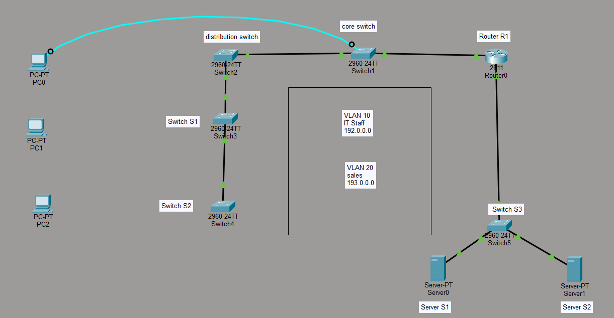
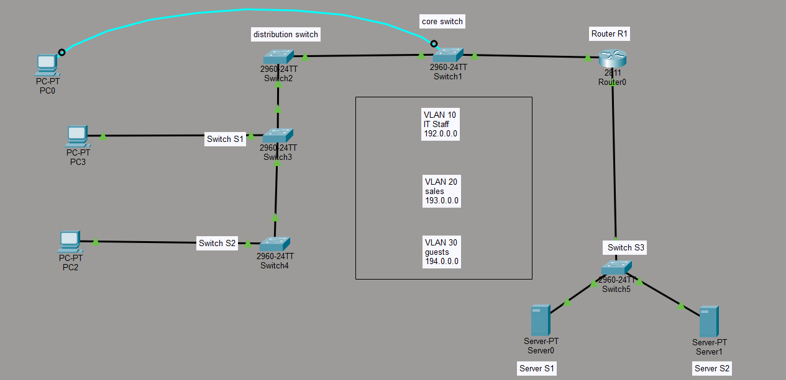
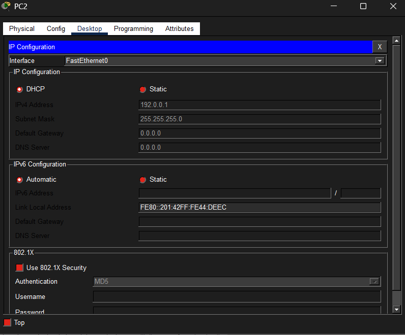
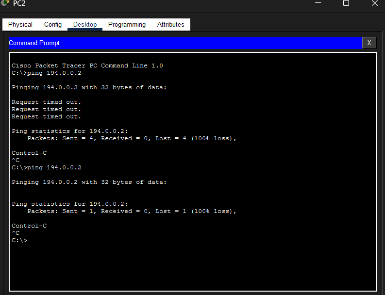
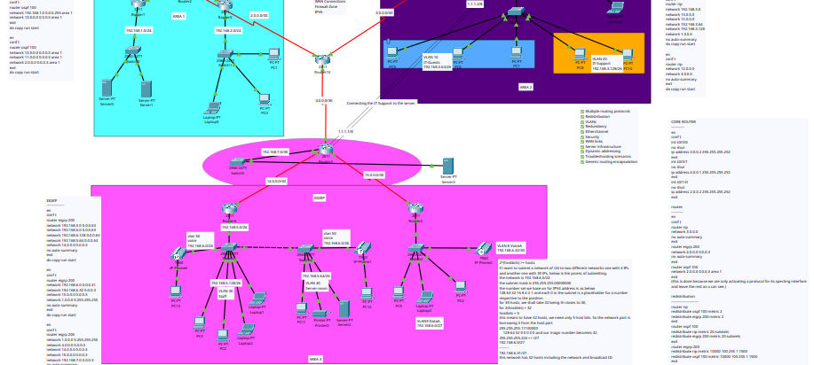

Projects
Lab101

This is the topology. We are creating a simple vlan network. The target is to make the core switch the VLAN server to all the rest of the switches, make the different vlans communicate to each other through the router. is the procedure.
Trunking
en
conf t
hostname Core_Switch
vlan 10
name IT
vlan 20
name sales
int vlan 10
no shut
ip address 192.0.0.100 255.255.255.0
int vlan 20
no shut
ip address 193.0.0.100 255.255.255.0
now this is to set up the environment. Trunking is the process of making a switch port transport data instead of using it for access. this means that if u plug a computer or any end device into this port, it will not get the connection but instead the network will be moved to another node… any node u add. Simply making a port a road for the coming data instead of the packing. below is the command
In configuration mode of the switch run;
int f0/1
switchport mode trunk
no shut
exit
int f0/2
switchport mode trunk
no shut
do write
Replace the interfaces with the respective interfaces connected to the switches and the ports u want to trunk. This is done on all the switches that had to act as trunks for the data.
Creating the VTP domain (VLAN Trunking Protocol)
The VTP is used to automatically distribute and synchronize VLAN configuration information across multiple switches within the same VTP domain. Instead of manually creating VLANs on every switch, VTP allows you to create, delete, or modify VLANs on one switch (usually in server mode), and those changes are propagated to other switches, ensuring consistency and reducing administrative effort. Below are the commands used
on the core switch
vtp domain UTHMAN
vtp mode server
This makes the core switch the overall server
on the other switches
vtp domain UTHMAN
vtp mode client
this makes the rest of the switches be slaves or be controlled by the server. This means that the configurations u make from the core switch, will be implemented throughout.
After this, we move to the router. In the router, we have to make sure that the computers connected to the different switches, with the neceesary configurations on the switch port, they can autoatically be assigned the respective ip addresses. below are the commands.
no
en
conf t
int f0/0
no shut
int f0/0.10
encapsulation dot1q 10
ip address 192.0.0.100 255.255.255.0
no shut
ip dhcp pool IT
network 192.0.0.0 255.255.255.0
int f0/0.20
encapsulation dot1q 20
ip address 193.0.0.100 255.255.255.0
no shut
ip dhcp pool sales
network 192.0.0.0 255.255.255.0
lets test. On either of our switches, connect a computer as shown here..

Then run the following commands on the switch port that u have connected your computer Use the copper straighthrough cable
en
conf t
int f0/3
switchport mode access vlan 10
do write
after that u check the computer following this step. Go to computer -> desktop -> IP configuration -> dhcp and u will get an IP as below.

And there, You successfully have configures a VLAN. Now lets check if the VLANs dont communicate. follow the same steps and this time round assign the port on a different switch a different VLAN. And then after getting an IP address, navigate to the command prompt and ping another computer. The two computers should not be communicating.

As u see the two computers dont communicate. So to make them communicate, we should give them a gateway. navigate to the router and use the following commands to configure inter-VLAN routing
en
conf t
int f0/1
no shut
ip address 195.0.0.100 255.255.255.0
ip dhcp pool IT
192.0.0.0 255.255.255.0
ip dhcp pool sales
network 192.0.0.0 255.255.255.0
default-router 195.0.0.100 255.255.255.0
do write
And if u ping this time round, they should be able to communicate through the router.
Multi-Protocol Enterprise Network Design with Route Redistribution
Protocols covered: OSPF · EIGRP · RIP v2 · GRE Tunneling · VLANs · EtherChannel · VoIP
This write-up documents the design and simulation of a multi-protocol enterprise network built in Cisco Packet Tracer. The core focus is route redistribution. A technique used in real-world networks to allow routers running different routing protocols to share routing information seamlessly. This kind of setup is common in large organisations that span multiple geographic regions, each managed with different routing protocols.
What Was Implemented
- Generic Routing Encapsulation (GRE) tunneling
- Routing protocols: OSPF (Area 1), RIP v2 (Area 2), EIGRP (Area 3)
- Route redistribution across all three protocols via a core router
- VLANs and Inter-VLAN routing
- IP Phones (VoIP)
- EtherChannel (link aggregation)
- Variable Length Subnet Masking (VLSM)
- Layer 2 and Layer 3 security basics
Network Topology

The network is divided into three protocol areas connected through a central core router that handles redistribution between them. The topology is designed to scale more configurations are being added over time.
Download the Packet Tracer file (.pkt)
Prerequisites: This guide assumes basic networking knowledge; IP addressing, subnetting, and a conceptual understanding of how routing protocols work. The IP addressing configuration is not covered here; focus is on the routing and redistribution setup.
Routing Protocol Configuration
Each area runs a single routing protocol. The commands below configure each protocol on the relevant routers. Routers not explicitly shown here require minor adjustments based on their specific interface assignments — the pattern remains consistent.
Area 1 — OSPF
! Router 1
en
conf t
router ospf 100
network 192.168.1.0 0.0.0.255 area 1
network 10.0.0.0 0.0.0.3 area 1
exit
do copy run start
! Router 2 (border)
en
conf t
router ospf 100
network 10.0.0.0 0.0.0.3 area 1
network 11.0.0.0 0.0.0.3 area 1
network 2.0.0.0 0.0.0.3 area 1
exit
do copy run start
Area 2 — RIP v2
! Router 1
en
conf t
router rip
version 2
network 192.168.3.0
network 13.0.0.0
network 12.0.0.0
network 192.168.3.64
network 192.168.3.128
no auto-summary
do copy run start
! Router 2 (border)
en
conf t
router rip
version 2
network 12.0.0.0
network 3.0.0.0
no auto-summary
exit
do copy run start
Area 3 — EIGRP
! Router 1
en
conf t
router eigrp 200
network 192.168.5.0 0.0.0.63
network 192.168.6.0 0.0.0.63
network 192.168.6.128 0.0.0.63
network 192.168.5.64 0.0.0.63
network 14.0.0.0 0.0.0.3
no auto-summary
exit
do copy run start
! Router 2
en
conf t
router eigrp 200
network 192.168.6.0 0.0.0.31
network 192.168.6.32 0.0.0.3
network 15.0.0.0 0.0.0.3
network 1.0.0.0 0.255.255.255
no auto-summary
exit
do copy run start
! Router 3 (border)
en
conf t
router eigrp 200
network 1.0.0.0 0.255.255.255
network 4.0.0.0 0.0.0.3
network 14.0.0.0 0.0.0.3
network 15.0.0.0 0.0.0.3
network 192.168.7.0 0.0.0.3
no auto-summary
exit
do copy run start
GRE Tunneling
Generic Routing Encapsulation (GRE) is a Cisco-developed tunneling protocol that wraps network layer packets inside virtual point-to-point IP links. In this project, GRE tunnels connect the RIP area (Area 2) and EIGRP area (Area 3) to the core, allowing routing information to flow across protocol boundaries before redistribution takes effect.
Common use cases include VPNs, carrying multicast traffic over unicast networks, and tunneling IPv6 over IPv4.
! Area 2 (RIP side)
en
conf t
interface tunnel 0
ip address 1.1.1.1 255.255.255.252
tunnel source s0/2/0
tunnel destination 12.0.0.1
! Area 3 (EIGRP side)
en
conf t
interface tunnel 0
ip address 1.1.1.2 255.255.255.252
tunnel source s0/3/1
tunnel destination 4.0.0.1
Tunnel source and destination values will differ based on your specific interface assignments and IP addressing scheme. Adjust accordingly.
Route Redistribution
This is the most critical part of the setup. The core router sits at the intersection of all three protocol areas. It activates each protocol only on its respective interface, then redistributes routes between them so that every device in every area can reach every other device.
Step 1 — Configure Core Router Interfaces
en
conf t
! Interface toward OSPF area
interface s0/1/0
no shutdown
ip address 2.0.0.2 255.255.255.252
exit
! Interface toward RIP area
interface s0/3/0
no shutdown
ip address 3.0.0.2 255.255.255.252
exit
! Interface toward EIGRP area
interface s0/3/1
no shutdown
ip address 4.0.0.1 255.255.255.252
exit
Step 2 — Activate Each Protocol on Its Interface Only
! Activate RIP only on the RIP-facing interface
router rip
version 2
network 3.0.0.0
no auto-summary
exit
! Activate EIGRP only on the EIGRP-facing interface
router eigrp 200
network 4.0.0.0 0.0.0.3
no auto-summary
exit
! Activate OSPF only on the OSPF-facing interface
router ospf 100
network 2.0.0.0 0.0.0.3 area 1
exit
Step 3 — Configure Redistribution
Important: Each protocol uses a different metric system, so you must manually specify the metric when redistributing into it. EIGRP requires five metric components:
bandwidth delay reliability load MTU. OSPF and RIP use simpler cost/hop-count metrics.
! RIP learns routes from OSPF and EIGRP
router rip
redistribute ospf 100 metric 2
redistribute eigrp 200 metric 2
exit
! OSPF learns routes from RIP and EIGRP
router ospf 100
redistribute rip metric 20 subnets
redistribute eigrp 200 metric 20 subnets
exit
! EIGRP learns routes from RIP and OSPF
! Format: metric <bandwidth> <delay> <reliability> <load> <MTU>
router eigrp 200
redistribute rip metric 10000 100 255 1 1500
redistribute ospf 100 metric 10000 100 255 1 1500
exit
do copy run start
Verification
After configuration, use these commands to confirm routes are being redistributed correctly:
! View the full routing table
! Look for R (RIP), O E2 (OSPF external), D EX (EIGRP external) prefixes
show ip route
! Check OSPF neighbor relationships
show ip ospf neighbor
! Check EIGRP neighbor relationships
show ip eigrp neighbors
! Test end-to-end reachability across areas
ping <destination-ip>
! Trace the path a packet takes
traceroute <destination-ip>
In the routing table, redistributed routes appear with an external tag O E2 for OSPF external, D EX for EIGRP external. Seeing these tags across areas confirms redistribution is working correctly.
Conclusion
Building and troubleshooting this topology gave a solid hands-on understanding of how large enterprise networks manage routing across heterogeneous protocol environments. The key takeaway is that redistribution is powerful but requires careful metric configuration. A wrong value can cause routing loops or suboptimal paths.
This project is still being expanded. Planned additions include HSRP for gateway redundancy, QoS for VoIP traffic prioritisation, and more advanced Layer 2/3 security configurations.
Questions or corrections are welcome feel free to reach out.